:
:  .
.
Definition
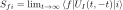
; unitarity (probability conservation, optical theorem) (Wheeler 1937; Heisenberg 1943). Write
(probability conservation, optical theorem) (Wheeler 1937; Heisenberg 1943). Write 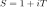
and extract energy–momentum conservation: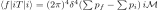
, with the invariant amplitude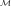
given by Feynman rules.Derivation of the cross section
Square:
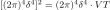
. Divide by time , by the incident flux and by the target density
, by the incident flux and by the target density 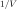
; with relativistic normalisation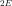
particles per volume: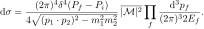
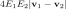
in collinear frames). Decay rate: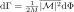
.Two-body phase space
In the CM frame,
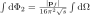
, so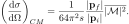
Worked example
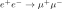
at high energy: gives
gives 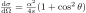
,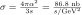
. At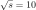
GeV: 0.87 nb. Unit check with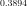
mb GeV .
.
Engineering applications
Cross sections set detector rates (
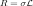
), radiation shielding and dosimetry (attenuation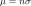
), interaction lengths in calorimeters, and photon interaction probabilities in X-ray imaging.Pitfall
Average over initial spins/polarisations (divide by their number), sum over final ones; and for identical final particles divide the total cross section by 2 (or integrate over half the solid angle).